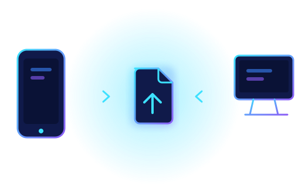

Direct Peer Transfer
Files travel over a WebRTC data channel between the two devices.
Direct device-to-device
Transfer files directly between your devices.
File size depends on your device, browser, storage and connection.

Enter the 12-digit code or scan the QR. Only the small connection data passes through a free relay; files go directly between devices.
The same 6 digits must appear on the other device. If they differ, someone may be intercepting: disconnect.
Your connection code (single use)
On the other device choose Receive Files, then type this code or scan the QR. It connects automatically.
Helps when a direct connection is impossible. Use your own TURN server; it relays encrypted data.
The code and QR use the free public relay ntfy.sh for a few seconds. If it is unreachable, open Manual connection below.
Connection status
Connection method
WebRTC DataChannel
Peer status
Files travel over a WebRTC data channel between the two devices.
Nothing is uploaded to a server; received files are rebuilt in your browser.
Files are sent in chunks with backpressure. The receiver keeps data in memory, so the limit is set to 2 GB.
Drop several files at once or use the file picker.
See percentage, speed and remaining time, and cancel at any point.
History stores only file names, sizes and dates on your device.
Files are transferred directly between connected devices. WebRTC data channels are encrypted with DTLS. Incoming messages are validated and file names are sanitized. Only share connection data with someone you trust, and note that no software can promise absolute security.
Without a signaling server, connection setup requires manual offer/answer exchange.
Often yes with the STUN option, but strict firewalls may block it. Without a relay (TURN) server, some networks cannot connect.
This version rejects files over 2 GB because the receiver holds data in memory. Real limits also depend on your device and connection.